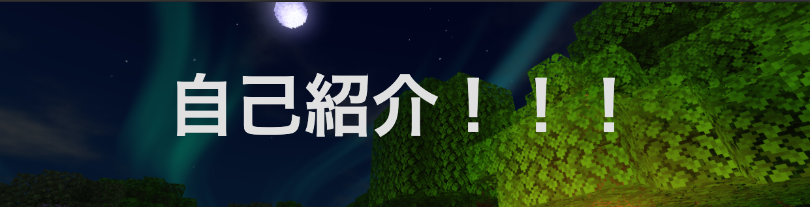
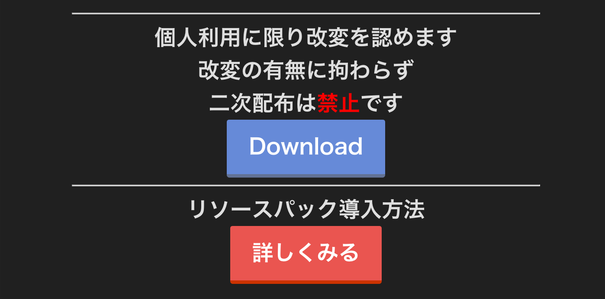

NARI Home Page
NARI Home Page のトップページ(*'▽'*)
〜Site Menu〜
自己紹介
Impressive Shadow Shader
ESBE-1G
ダウンロード
ドット絵管理所
Contact
Tweets by channel_nari
〜このサイトの使い方〜

ページ上部にある画像のような見出しをクリックすると
トップページに戻ります。

Downloadボタンを押すことによってダウンロード、
詳しくみるを押すことによってYouTubeの動画に飛びます。
©︎2020〜
@chanel_nari
NARI Channel